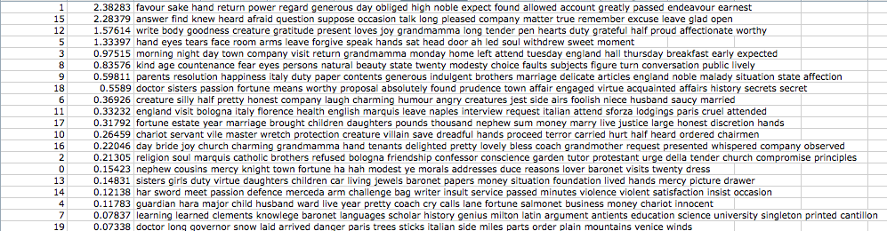
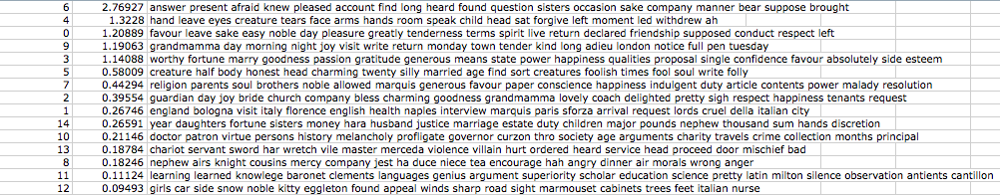
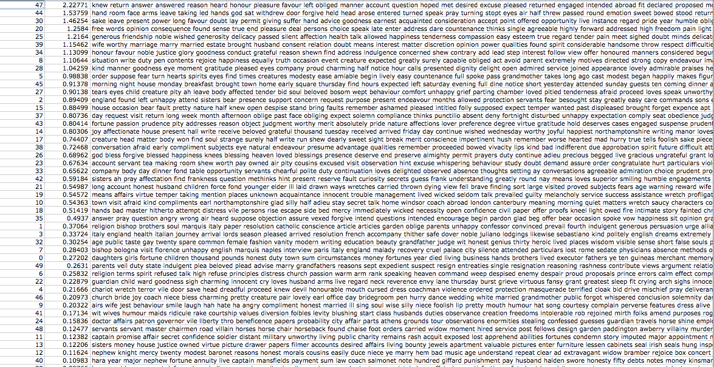
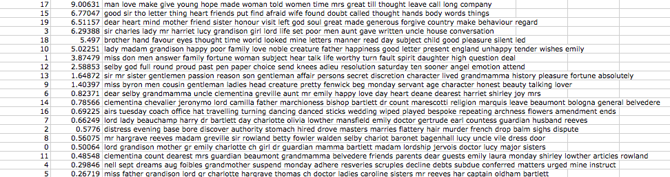
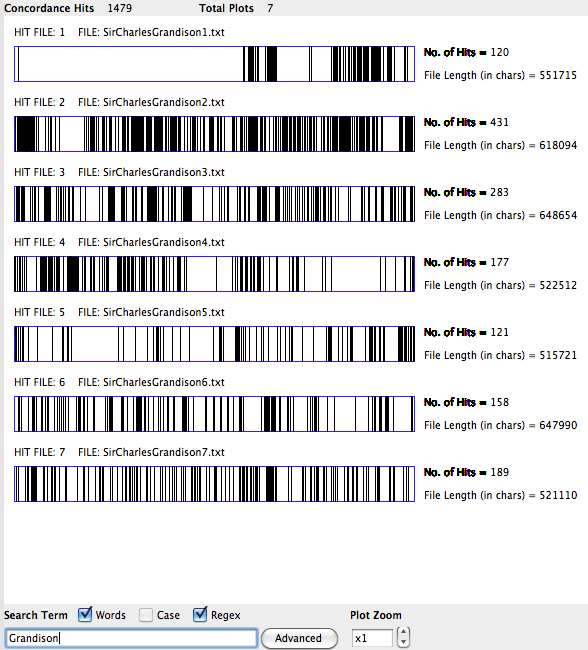
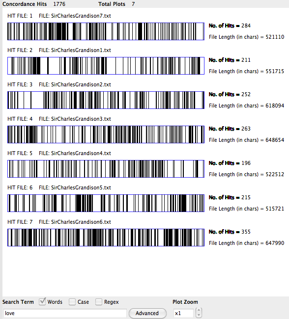
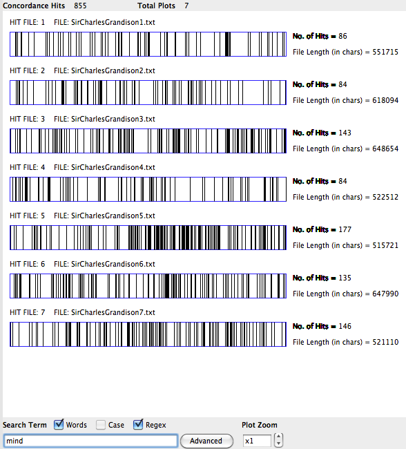

Introduction
“Knowledge is of two kinds; we know a subject ourselves, or we know where we can find information upon it. When we inquire into any subject, the first thing we have to do is know what books have treated of it. This leads us to look at catalogues and the backs of books.” (Samuel Johnson, cited in Wheatley, How to Make an Index)
Samuel Johnson was in the process of compiling his dictionary of the English language when he wrote to his fellow man of letters, Samuel Richardson, about his latest novel: “I wish you would add an Index Rerum [subject index] that when the reader recollects any incident he may easily find it, which at present he cannot do.” At the time of the letter, Richardson had already begun the process of assembling a “table of sentiments” for his previous novel, Clarissa: “Many of my friends wish to see it printed by itself, as a collection of maxims, aphorisms, &c. which they think would be of service to the world, independent of the history, as they relate to life and manners. I will annex the heads they arranged under.”1
The story of Clarissa’s post-facto index sets the stage for the index to percolate into the literary production and imagination of Richardson’s next work. In 1754, Richardson published The History of Sir Charles Grandison, an epistolary novel packed with the apparatuses of reference. Sir Charles Grandison is an even more massive text than the previous. The seven-volume tome, in its twentieth century reprinting, spans over 1600 pages and text includes forty-seven footnotes, a table of characters, a table of contents, and three paratextual essays. Rather than wait for readers like Johnson to request some means for navigating this mass of text, Richardson includes two indexes in the first edition. The final volume advertizes this addition on the title page, with the phrase: “To which is added, An Historical and Characteristical Index.”


To the eyes of twenty-first century readers, the appearance of an index in Richardson’s novel might likely signify its aspirations towards standardization, systematization, and ordered knowledge. Janine Barchas, in her detailed reading of the graphic design of Richardson’s text, characterizes Sir Charles Grandison’s indexing as the product of Enlightenment emphasis on rationalizing and cataloging the novel according to systems of knowledge. The index, as Barchas argues, underscores what its size already indicates: the seriousness and “literary gravitas” of a book that warrants an ordering device 2 and signals a desire to be shelved alongside other indexed texts and gain “an authoritative, referential status.”3 In more sweeping terms, critics characterize the eighteenth century subject index as “a genre that reflects the period’s emphasis on producing systematic knowledge.”4 Robin Valenza’s excellent reading of eighteenth century conceptions of knowledge and different types of intensive and extensive readings makes this move to position the index to Clarissa within a genealogical tradition of the database. Valenza describes the device as a tool for extracting “sentiments indexed as knowledge”5 and for producing scientific knowledge in a systematic way akin to contemporary “database-learning,” a logic oriented towards its use by the reader. In all of these cases, the index is fixed as an artifact whose very form engenders systematic ways of knowing and reading.
But to characterize Richardson’s index solely an instrument of Cartesian rationality make an error in assuming that systematic knowledge was its end goal––flattening and reducing a practice that was in actuality far more heterogeneous in nature and which included commonplacing, canon-formation, memory aids, and histories of reading. In addition to containing references, pointing, excerpting and ordering, the index also produces. Johnson, in his description of the desired index, characterizes it as a way to re-read the novel and a memory tool. The novel itself engages with what it means to read, organize, and excerpt information, going so far as to include a letter where the heroine, Harriet Byron, instructs her friend Lucy in how to read “indexes or hands”6 in both books and lovers. Clearly, the index played a more complex role than mere instrument of systematization.
Richardson’s two indexes––one, an “index historical and characteristical” and the other, an “index of similes and allusions”––provide a way to re-read the relationship between the novel and systems of information management: the technology of the index and its multiple forms negotiate different modes for reading and re-reading the novel itself. Through a historically-oriented re-reading of different indexing practices in Sir Charles Grandison, I wish to investigate to the processes of intensive and extensive reading that occur in the space of the index, and argue that the logic of indexing and its practices drew on both modes of reading. Investigating index-reading, index-learning, and index-writing in Richardson’s novel, its indexes, and their historical context, I want to argue for re-framing the index not as a tool, but as a set of indexing practices that were fluid, creative, and productive. In this reading, I argue that the epistemological and material problems of information management dramatized in the index are also engaged with the problem of how to read and use a novel.7
Two Types of Indexes: Index Historical and the Index of Similes
At once serving to catalog and sum up the text of the novel, yet positioned peripherally at the back of the book, the two indexes to The History of Sir Charles Grandison occupy the space that Gerard Genette terms the “paratext”––that which is located “between the inside and outside of the text” and serving as a “threshold” to the work.8 As it appears at the back of the book, these devices are both supplement to and part of the main text, a fact which poses challenges in how we read them.
.jpg)
The first and largest of the two indexes is the expansive “Index Historical and Characteristical to the seven volumes.” Organized alphabetically, this index spans over 100 pages, includes headers for general sentiments, such as “Advice to women” to character names, and directs the reader back to the main text to find illustrative passages.
The “Index Historical and Characteristical” is followed by the index of “Similes and Allusions in the Seven Volumes,’ which is an alphabetical list of the metaphors, stylistics, and figurative descriptions of persons and general ideas in the novel, along with the page number. Unlike the index historical and characteristical and its entries on characters and events that might loosely be classified as novel-specific, this index captures the peculiar and idiosyncratic metaphors, allusions, and comparisons, and “stylistic beauties”9 that might stand on their own, autonomous from the narrative. Leah Price observes a similarity between Richardson’s “index of similes and allusions” and Edward Bysshe’s work, The Art of English Poetry, which consists primarily of a catalog of examples of stylistic verse; both texts excerpt and compile “stylistic beauties,”10 a similarity that can be seen even at the level the title of Bysshe’s catalog:
A Collection of the most Natural, Agreeable, and Sublime Thoughts, viz. Allusions, Similes, Descriptions, and Characters, of Persons and Things; that are to be found in the best English Poets
The fact that the two types of indexes split up the task of indexing the novel and appear stylistically distinct seem to provide two different angles on contents in the novel and two different approaches to indexing. Price is clear to point out these two variant indexes, though adhering to different indexing principles, are not so easily distinguished. One entry might fit into both categories, as in the example of one indexed metaphor, “Lord L, proud of his son, To a peacock”, that encompasses both a narrative detail (index historical and characteristical) and a metaphor (index of similes and allusions).
Price’s observation that there are two types of indexes in Sir Charles Grandison may be an obvious one, but it is important for understanding the index as not merely a static artifact, but a dynamic genre, one with the capacity for sub-genres. The differentiation between the “index historical and characteristical” and the “index of similes and allusions,” in many ways dramatizes the problems of generic stability sketched out in histories of the “novel” itself as a genre. The mere presence of more than one type of index within the single novel of Sir Charles Grandison or across other works of fiction, precludes the possibility of the first as functioning as any kind of total index to the novel.
Other Indexes and Indexed Novels
Though visually eccentric to twenty-first century eyes, the indexed novel was not so foreign to an eighteenth-century audience, for whom the idea of a book as a “novel” was still a nebulous and not yet defined genre or body of works. Richardson’s novel indexes were situated in a larger milieu of his own work and those of other eighteenth century indexing authors. Just as its references refer to a world beyond that of the work itself, so, too, does the form of an index refer to a larger set of practices in organizing the information of printed texts. Indexes in the eighteenth century served a variety of purposes, ranging from satirical to reference text, to modes of commonplace reading and, while the reception of the index was often mixed, its use as a reading practice was far more legible to eighteenth century readers than a twenty-first century reader might expect.
Within Richardson’s own corpus, indexing was a practice that extended the text and frame of his novels. In addition to his indexed novels, Clarissa and Sir Charles Grandison, Richardson also wrote a collected compendium text to all of the sacred texts referenced (and researched) for Clarissa. The title page reads:
Meditations collected from the sacred books and adapted to the different stages of a deep distress, gloriously surmounted by patience, piety, and resignation, being those mentioned in The history of Clarissa, as drawn up by her for her own use. “Thirty-six meditations of Clarissa, only four of which are inserted in the history.” Includes selections from the Book of Job, the Psalms, the wisdom of Solomon, and Ecclesiasticus.
The title indicates that this separately published index functions not only to trace the four references made in Clarissa, but also extend the possible field of references––and the documentary imaginary of the novel––to the other thirty-two meditations.
His final work was, fittingly, an index to all of his novels. Published in 1755, A Collection of Moral and Instructive Sentiments is divided by his three novels, Pamela, Clarissa, and Sir Charles Grandison, and ordered alphabetically within each section. In the preface, Richardson outlines one method by which the reader might make use of the index:
For the use therefore of all such as are desirous of repeatedly inculcating on their own minds, and the minds of others, the important Maxims, which those three works contain; and who would refer themselves occasionally to the volumes for the illustration of these maxims; this General Index both of Maxims and of References is now offered to the public in one pocket volume. 11
Through the medium of the one-volume pocket index, the novels are brought idea of accumulated and repeated reference, allowing a reader to compare subject headings like “Advice to Young Women” and “Advice to Young Married Women” in Pamela to “Advice and Cautions to Women” in Clarissa and “Advice and Cautions to Women” in Sir Charles Grandison. As evidenced by the title, this collection provides an even more explicitly moral reference guide, with subject headings such as “Fine Gentlemen” under which includes the references, “See Good man. See Sir Charles Grandison, throughout that article.” A Collection of Moral and Instructive Sentiments is so thoroughly an index that Richardson goes so far as to include an index to the index.12
Richardson was not the only novelist deploying the tool of the index. Eliza Haywood’s Memoirs of a Certain Island (1726), Letters Writ by a Turkish Spy (1730, re-printed 1734), The History of Peggy Black and Wilmot Bond (1784) serve as a handful of examples of novels contemporaneous, or just before or just after the publication of Sir Charles Grandison, not to mention the more satirical indexes of Pope or Swift.13
Before Richardson wrote Sir Charles Grandison and its indexes, Eliza Haywood created an index to accompany her novel, Memoirs of a Certain Island Adjacent to Utopia. The roman à clef work––dramatizing real events under a veneer of fiction––includes an index, labeled “A Key” in the back of the novel. This “key” links the work’s real and historical references, linking up the censored names such as “D. D–––re” to their “real world” equivalents, (in this case, “Duke de Alamant”).

After Sir Charles Grandison, the anonymous novel, The History of Peggy Black and Wilmot Bond includes an index embedded in the main text itself of philosophical topics and an alphabetized list of foods included as part of a shepherd’s diet.
From this brief sampling of literary indexing practices written before, during, and after Richardon’s indexed novel, Sir Charles Grandison, we learn that the use of the index exists in a larger field of indexical novels and types of indexes. Like the fuzzy relationship between fictionality and history generally accepted in the trajectory of the “rise of the novel,” the index occupies a similar spectrum of factual and fictional uses (and those that lie somewhere in between).
Index-Learning and its Critics
Placing Richardson’s index within a historical frame is a surprisingly difficult task. A glance at the publication history of reference texts – Ephram Chambers’s Cyclopaedia (1728), Diderot’s Encyclopedie (1751-65), Samuel Johnson’s Dictionary (1754), Encyclopaedia Britannica (1768-1771), Carolus Linneaus’ System Naturae (1758), Charles Messier’s Catalogue (1774) – illustrates the pervasiveness of this genre of taxonomic reference works that, over the course of the eighteenth century had risen as the paradigmatic sources of knowledge and information.14 Coupled with the pervasive cataloguing tendency that Barchas and others have observed in the novel’s many lists and elaborately cataloging descriptive passages, we might fit the historical rise of indexing technologies with the canonical rise of realist fiction and its characteristic attention to cataloging the details of daily life that Ian Watt sketches out.15
The idea of an index in fiction, however, sits imperfectly in this narrative of realism and even more uneasily with novel readers and novel critics. While the first eight editions of Grandison included the index, subsequent abridgments cut it out and even Jocelyn Harris’ well-regarded 1972 edition of the novel significantly omits both Richardson’s indexes (while preserving almost all other paratextual essays, prefaces and concluding letters).16 Though observing the index’s importance as a space for reading revisions, she characterizes the index as “mechanical extrapolation.”17 Even Genette edges away from the index, giving only a passing reference to them in the conclusion to Paratexts as “certain elements of documentary paratext that are characteristic of didactic works are sometimes appended with or without playful intent, to works of fiction” that are “not commonly used today.”18 Genette, like Harris, treats the index as a mostly mechanical apparatus occasionally used in satire or pastiche. Behind these theoretical positions is a far broader assumption that characterizes fiction as narrative, plot, story and the index as merely “information.”
Why is the index seen as antagonistic to fiction? Answering this question requires delving into the divisions between different types of reading. A reader might look no further than Richardson’s contemporaries to find a stark differentiation between reading and index-reading (and, by extension, the knowledge acquired through them). In Alexander Pope’s familiar warning to eighteenth century readers about the dangers of “index-learning”––
How Index-learning turns no student pale,
Yet holds the eel of science by the tail 19
––echoes the concerns of an era in which systems of reference were being produced on a much greater scale in order for readers to navigate the sea of increasing information in the explosion of printed materials.20 Pope had a conservative perspective on information technologies shared and influenced by fellow “Scribblerian” satirist, Jonathan Swift, who critiqued index-learning readers who attempt to
get a thorough insight into the index, by which the whole book is governed and turned, like fishes by the tail. For to enter the palace of learning at the great gate requires an expense of time and forms, therefore men of much haste and little ceremony are content to get in by the back door.21
Indexes became short-cuts for reading, compendium forms of knowledge that like eels and fishes, were only superficially grasped.22 As a “back door” to the “palace of learning” the index bore the tensions between “intensive” reading and “extensive” reading––browsing or skimming a work––or a shift, in what some historians have traced as a shift from intensive to extensive, and others, as a perennial struggle between these two modes.23 For adherents of the former, the index destabilizes traditional practices of linear reading, as it, by its very nature, is designed to be read non-linearly, allowing the reader to access information by reading through means other than the intensive ones suggested by the narrative logic of the book.24
Complicating this transhistorical debate over the function of the index in intensive vs. extensive reading still further was the shifting nature of indexing and the indexical imagination of the index itself. From the 16th – 18th centuries, an index’s value lay in “its ability to make knowledge accessible and usable.”25 But what constituted “useful” knowledge and how that knowledge was indexed was fluid. As Ann Blair points out in her history of early modern forms of information management, sixteenth century and early modern of indexers were much more organic and moralistic, less concerned with the rigid exactitude of systematic information organization, and were not standardized.26 We see examples of what the 19th century indexer Henry B. Wheatley would term “bad” indexing in this 16th century Index Librorum prohibitorum (the index of prohibited books) where the titles appear alphabetically, but are broken up idiosyncratically into different categories, leaving no unifying logic to how the text might be consulted.
In the absence of as rigid a system for information management, we might imagine that the index itself had to be read in an intensive fashion.
Questions of indexing practices and intensive versus extensive reading are not merely questions of knowledge classification, but knowledge storage and retrieval. The relationship between the two has its origins in the fifteenth and sixteenth centuries mnemonic aids for scribes or idiosyncratically compiled “commonplace books;R#8221; over time, distinctions developed between “commonplacing” and systematic indexing.27 Robert DeMaria argues that systemization and utility became much more ingrained protocols in John Locke’s notions of private reading which shifted from randomly organized, idiosyncratically indexed “commonplace books” to indexes where readers “could organize all of their notes by carefully selected, generally predictable topics.”28 Looking again at the critiques of “index-learning” in Richardson’s era, we see an attention to the role of time-to-access in the process of reading. Similar arguments are made today about the systematic nature of twenty-first century search engine-reading, insofar as it is seen as providing a quick and easy way to extensively sift through larger volumes of text very quickly. 29
Index-Reading: Intensive and Extensive
Another avenue Sir Charles Grandison presents as a means for navigating the relationship between knowing and reading in the indexes lies in the material design, display, and interface of the index on the page. The novel itself does so by dramatizing the process of reading an index.
In Volume 2, page 99 of Sir Charles Grandison, Harriet Byron uses a navigational device, a manicule,30 to point out the significance of indexes to the letter-recipient, Lucy Selby:
Pray, my dear, attend for the future to those indexes or hands; and forbear to read out the passages enclosed by them, if you can–But if you come upon them before you are aware, why then read on–with all my heart.31
This passage dramatizes the process of index reading. Harriet, in her description, notes the phenomenological experience that both Lucy and the reader encounter in the index. Describing the process of index-reading, she alerts both Lucy and the reader to the role that this navigational device plays the reading process, the remark might be dismissed as merely a meta-fiction. Yet this small remark contains a tremendous purchase on the rest of the text.
Harriet’s language is actually surprisingly complex and suggests two possible ways in which her remarks, and, by extension, the index itself, may be read. First, Harriet’s advice to “attend for the future to” those indexes could be read as advice to read the index now and continue to attend to it in the future. Or, we might just as easily read this advice as suggesting advice to skip the index and read it at a later point. This temporal disjuncture carries over into the a second place where the index’s functions splits in two ––the reading of the word “forbear” which, in Richardson’s eighteenth century context, would have meant both “refrain from” reading and endure. The index’s odd place as partially out displaced in time (towards a future reader) as sign that that, when registered by the attentive reader, underscores important content. Yet this line can also be read in another way: as the Harriet then interrupts her own sentence to note that indexes can be noticed too late, in which case the reader should “read on” and, perhaps over, this particular passage text.
The index, in its two readings, becomes a medium for illustrating the need for as many forms of indexing as there are ways of read. This scene dramatizes the encounter with the index as a part of narrative as much as all else, yet the informational device remains on the side. As instructions within the text itself, the logic of index-reading appears dramatized in the narrative as a mode of selecting, excerpting and pointing to information in a way that highlights the necessarily iterative re-readings of the text and the role of typographical and stylistic elements of the index—in this case, the manicule––that contribute to how it is used and understood.
In inviting the reader (Lucy and the novel-reader) to consider the interplay between typographical design and reading experience, this small passage speaks to the larger importance of the form of the index that must be taken into consideration when analyzing its epistemological implications. The trademark of increasingly complex (though not necessary systematic) indexing systems in the eighteenth century were elaborate and systematic typographical arrangements,32 a phenomenon which emerges in Richardson’s use of small caps for character names in the “index historical and characteristical,” where entries are cross-referenced and organized still further by subheadings, many of which, themselves, are cross-referenced either by references in brackets––“[See Miss Jervois]” or indented and rendered in a smaller typeface (See Fig. 1 and Fig. 2 for examples of both). With such a system in place, the index-reader might take a labyrinthine path, spending significant amount of time cycling through the index itself before finally being directed to the main text.
IMAGES OF VOLUME 7, PAGES 363 AND 376.
.jpg)
.jpg)
The taxonomic categories of Sir Charles Grandison’s “Index Historical and Characteristical” include, “Absence of Lovers, ADAM, ADDISON, Address to men of sense in the gay world, Adventures of Love,” etc––topics that at once seem a baroque effusion, and a systemic topical and thematic dissection of the work. While the headings themselves are alphabetized, the contents under each heading are ordered chronologically. These entries suggest themselves both to extensive consulting– providing examples for a reader to find the particular sentiment or exempla for moral conduct–and require a certain amount of intensive reading. In the above pages, even the cross-referencing notes directing the reader to “See more…,” “See also, Lady Clementina; Signor Giacomo; Sir Charles Grandison,” and “See the articles Beldevere, Byron, and Clementina, to the end” are prefaced by long paragraphs indexing the content referenced in the other index entries; the reader must read the entire paragraph in order to get a sense for what it is they must seek elsewhere. Many other entries contain significantly detailed subheadings that read like a synopsis, and the persistent use of “And” as a connection between the various subheadings of the reference works to smooth out the contorted syntax of the index, giving the entries a more narrative feel.
Indexical Excess: The Dangerous Economy of the Index
The index possesses a strange economy. To aid the reader in navigating the excess material of the multi-volume novel, it supplements. The supplement “adds itself, it is a surplus, a plenitude enriching another plenitude”33 While the Derridean supplement adds in order to enrich or replace, the index, as much as it adds to the original text, also adds in order to abridge. In the case of Sir Charles Grandison, the index is massive, occupying one quarter of volume seven, and, as Janine Barchas notes, requiring a significant expenditure to print.34 This expenditure is worth considering alongside the project of the main text. In the presentation of “particulars” in Sir Charles Grandison, there is a fantasy of order. The reader, might, like Harriet Byron, feel that “There is room for everything to be in order: Every-thing is in order,”35 as she surveys Sir Charles Grandison’s well-maintained estate at the end of the novel. The fact that the narrative brings together the property-owning, moral center of the text, Sir Charles Grandison, as he becomes the executor of Sir Hargrave’s will, the author of a legal contract sorting out relations with Clementina and her Italian family, catalog, and the head of his estate, his family, and by extension, the text, in what Margaret Doody reads as the fulfillment of the Enlightenment desires.36
To smooth over the problems of the index, however, is to misread this fantasy as a reality present in the text. As supplement to an already-massive text, the index becomes subject to the same crises of information management. Going through the subject headings, we see the index itself take on a narrative arc, behaving more like a narrative than reference. Filling the pages of this sizable index are numerous entries that, in the sheer number of references they contain, exude an ethos of evidence even before the reader consults the referenced passages:
BYRON, Miss [...] Refers to Lady G. a case put to her by her Lucy and the other young Ladies at Selby-house, on the force of a first passion, ibid. In which are included—The case of Lady Clementina, 200.—Her own case before marriage, 201.—That of Mrs. Penelope Arby, 202.—Mrs. Eggleton’s story, ibid.—Mrs. Shirley’s when a young woman, 203 to 208.Particular application of the subject to herself, 208, 209. Lady G’s decision upon it, 213, & seq. Particularizes their happiness at Grandison-hall, 220, 221. >Signs of Love, i. 80. | ii. 82. 92. 99. 169. 315. | iii. 20. 43, 44. 47. 49. 50. 51. 129. 220. 221. 232 | iv. 9. 235 37
Quantity allows the references, to a certain extent, to stand as autonomous: “the force of a first passion” is backed up by reference to seven exemplary cases, while the heading, “Signs of Love,” has nineteen examples.
Cataloging logic seems to preside over the text itself, producing both a sense of order and, also, literary excess. The entries in the “Index Historical and Characterisitcal” for the novel’s main characters, Grandison, Clementina, Lady Grandison, and Miss Byron, shift from a chronological account to a more detailed volume-by-volume subheadings for entries that go on for several pages, extending the logic of the index until it threatens, paradoxically, to turn into narrative. Here, the material length of entries becomes a translation of narrative significance. As the entry grows, the subheadings become spatially distant from the original header, threatening to destabilize the order by being too much of a supplement, the reader is forced to read the entry through, rather than engage in the normal protocols of quick querying. The crisis in the “economy of information,” so to speak, causes the index’s role as autonomous, mechanical tool to come into question.
Index-Writing and the Division of Information Labor
Richardson’s two indexes do not compile themselves. They, like the rest of the text, must be produced through a process and labor of writing. As written works, any such index is not a neutral medium; each “is a created work, a reflection of the narrative choices of its compiler.”38 Like the Scribblerian trivialization of index-reading, reactions to the index illustrate the tension between what is seen as the creative work of the author and the technical work of the indexer. An excerpt from The Index-Writer (1729) shows the extent to which indexing was looked down upon as a trade, rather than an art:
When Mr. Arch-Deacon Echard had finis’d his 3d Vo. of the History of England, the Drudgery of compiling an index was left to one who was thought not unfit for so low an Employment as giving and [sic] Alphabetical Epitome of that Volume39
The irony of this passage, of course, lies in the fact that the “Drudgery” of compiling an index comes to be the scandalous basis for a heated polemic about the Whig Historian whose allegedly subversive index to the history of England stirred up political controversy. Nonetheless, this prefatory note underscores the discursive production of indexing as “drudge” work.” Relegated in eighteenth century cultural memory to “low Employment,” the passage highlights the divide between two different kinds of knowledge work: the “unskilled” labor of indexing and the “skilled” labor of the literary authorship. Indeed, this division manifests similarly in the Harris’ twentieth century rational for excluding the index from her edition of Sir Charles Grandison: the index is a “didactic summary” that “repudiates the flexible creations of the novelist.”17
Richardson, in his dual function as both author and indexer of Sir Charles Grandison, serves as a prime case for rethinking this distinction. As a printer, Richardson played multiple roles as author, editor, printer, publisher and indexer, editing, publishing, and indexing other texts.40 Certainly Richardson’s index entries exhibit aesthetics that, from our contemporary perspective, might read as having more “literary” flourish, such as “Femality, a peculiar, but expressive, word of Mr. Selby” and, in another reference to Grandison’s character: “See for more of the actions of Sir Charles Grandison, almost every article of this Index, illuminated by his goodness and magnanimity.”41 More importantly, however, Richardson’s role in the indexing of his own text calls attention to the fact that the index is an authored object. Like “denotative” and “technical” language that refers rather than directly means, Richardson’s indexing practices themselves make use of an alternate form of information management in thinking about the language of the novel.
The indexes exert “control over a reader’s recollection, or revisitation, of specific moments in the narrative.”42 As Henry B. Wheatley describes it, the indexer exerts tremendous influence in shaping the reading through their indexing choices:
The Indexer has a considerable power in his hand if he chooses to use it, for he can state in a few words what the author may have hidden in verbiage, and he can so arrange his materials as to force the reader to draw inference.”43
Framing these the two indexes as an indexer’s choices in how to order the text––from the simple choice to alphabetize the indexes to decisions on what enters each index––brings to light both their textual quality and their status as both interpretable and the outcome of interpretative decisions.
Index-Readers as Carvers: Managing the Material of the Text
I take a White Paper Book of what Size I think fit, I divide the Two First Pages which face one another, by parallel Lines, into Five and Twenty equal parts with Black Lead; after that, I cut them perpendicularly by other Lines, which I draw from the Top of the Page to the Bottom, as you may fee in the Table or Index, which I have put before this Writing. Afterwards I mark with Ink every Fifth Line of the Twenty Five that I just now spoke of. [....]
I put at the Beginning of every Fifth Space, or before the Middle, One of the Twenty Letters which are design’d for this Use; and a little farther in every Space, One of the Vowels in their Natural Order. This is the Index or Table of the whole Volume, be it of what Size soever. – John Locke44
Writing fifty years before Richardson, John Locke prescribed a rigorous method for the “Natural Order” of the Index that condense any size of text into two pages of headings. Locke’s rigid prescription for the management of the common-place index extended into its interpretation: he prescribed “general” and “predictable headings” for the indexing reader so that their index might unambiguously reveal this natural order.28
In contrast to Locke, Richardson’s indexing practices exceed the limits of this indexing system, and not just in terms of its far-greater-than-two-page index. Richardson’s philosophy of the reader’s interpretative practice also differs. Describing the ending of Sir Charles Grandison to a close correspondent, he writes:
The whole Story abounds with Situations and Circumstances debatable. It is not an unartful Management to interest the Readers so much in the Story as to make them differ in Opinion as tho’ the Capital Articles, and the Leading one, to espouse one, another, another, Opinion, make them all, if not Authors, Carvers.45
Richardson’s Reader-as-Carver configuration signals a shift from a Lockean, system of general headings with fixed meanings toward a looser, malleable set of circumstances and sentiments capable of being freely used or interpreted by the reader/carver/user-of-knowledge. At one point during the writing Sir Charles Grandison, Richardson goes so far as to plan for final volume to be written by his correspondents and readers, all of whom would “at his or her own Choice, assume one of the surviving Characters in the Story, and write in it” and Richardson would “pick and choose, alter, connect, and accommodate” to complete the volume.46 While this plan never played out, another incarnation of this “picking, choosing, altering, connecting, and accommodating” lives on in the index, which the Carver/Reader might use to explore the narrative, its sentiments and characters “at his or her own Choice.” Coupled with the extension of the narrative into the space of the index, this sentiment suggests an openness and interpretability that would be impossible within a completely mechanized, fully-digested system of information management.
Richardson’s use of the peculiar term “Carver”47 points to another aspect of the text: its sheer physicality, a materiality that the index forces the would-be reader to confront. The logic of the index, as Valenza points out, is related to the endemic materialism of the text, the fact that in addition to the moral sentiments, there is “something in its very length” and breadth of comprehensive detail.48 Beyond the signs of prestige and capital that a large book proclaims with its size, its length makes material the process of knowledge acquisition and shows, literally, the problems facing a reader whose act of reading is material one, constrained by real time and space. The novel is aware of this tension. As the text overflows with textual excess, we see reference to the problem of capturing and noting the “particulars.” The novel’s chief letter-writer, Harriet Byron, diligently sets out to capture the “particulars”: “But I believe, as I am in a scribbling vein, I must give you the particulars of one conversation” and “The particulars of one more conversation I will give you”49 despite the “great deal of writing does the reciting of half an hour or an hour’s conversation makes.” Yet this is not an excess of “realist description” but rather, of “narrative detail,” a detailed account of actions, not objects.50 These “particular” situations are the reference points that the index points to, and their effusion in the daily correspondences of the characters, are what create the bulk of the main text. .jpg)
The presence of an aesthetic regime in the index becomes even more apparent when we move from the Index Historical and Characteristical to the Index of Similes and Allusions. Here, the ordered logic and economy of the index mingles with metaphor and turns of phrase.
The first page of this index lists the varying objects and the location of the varying metaphors describing them:
Brides adorned for the nuptial ceremony, To heifers decked out for sacrifice, vi. 344. | vii. 146. >Brother, polite, To a black swan, ii. 4. 326.
BYRON, Miss, To a Parthian, i. 68, 69. [See also vi. 143.] To a frighted bird, i.96. | ii. 299. Drawing of characters, To throwing of squibs, ii. 289. On a particular occasion, To a child put out of its lesson, vi. 61. Urged, as she thought; too pressingly, To a snail shrinking into its shell, vi. 179. In the prudery attributed to her by Lady G. To a pretty cow, with a careless heel, vi. 285. And by the same, To a see-sawed infant, ibid. To Minerva, vi. 309. To the Blessed Virgin, by Lady Clementina, vii. 143. To the middle-character between Vashti and Esther, vii. 177.
What’s indexed here is neither general sentiment, nor a chronology of the characters’ trajectory, but rather, a series of creative metaphors, a catalog of descriptive aesthetization and poetic effusion. In this selection of entries, we see rhetorical patterns like those in the Index Historical and Characteristical: the behemoth size of individual entries, Richardson’s authorial flourish in the phrase “Urged, as she thought, too pressingly”–and the use of conjunction, “And.” Taken together, both indexes show the kind of “carves”51 that the processing of referencing enacts reveals the material excess of the text, even when reduced to its indexed references. Richardson’s method is not an undermining of “objective” and scientific indexing– reading this index this way would be ahistorical and pre-suppose a rigidity in the form that was not present at Richardson’s time. Instead, both index and index-reader engage with the material management of an encyclopedic text, requires a process of labor, of reader-“carving” through massive amounts of text.
Topic Models and Indexes
Recent interest in modes of extensive reading has resurrected the eighteenth century index alongside a twenty-first century kin: the topic model. Topic modeling, or latent Dirichlet allocation, serves as a method for statistically analyzing large corpuses of texts. The software ––most commonly, a package called “MAchine Learning for LanguagE Toolkit (MALLET)”–reads the text to generate “topics”: clusters of words that occur frequently together in a given segment of the text.52 The topic model, like the index, seeks to sort, cover, and condense a wide swath of text into keywords.
Topic modeling has been met with mixed reception in the realm of literary and historical studies. Early work in topic modeling had literary critics invoking the topic model as an essential map to the work. The rhetoric surrounding these early topic models depict the tool in reified tones of as a means for “uncovering”53 or “revealing”54 the hidden patterns or constructing mastering maps to a text (with all of the totalizing flourish of New Critic, a structuralist, or a suspicious reader). Topic modeling has become a more widespread methodology, and as part of its popularization has included the development of a topic modeling graphical user interface (GUI), which both makes topic modeling more readily available to humanists unfamiliar with issuing command line code, and easier to create as a kind of “quick and dirty” means of engaging with the tool, which, as Miriam Posner observes, can lead to the use of the tool “without having much idea what you’re doing or what the results mean.”55 Benjamin Schmidt notes, humanists tend to treat topic models and the programming software behind them as black-boxes.56 In this general, black box approach, topic models and the software program become the site of un-interpretability. The work of the topic model, as we have seen in the characterization of index-writing and index-reading, is treated as a kind of neutral medium for displaying objective data that humanists who might otherwise be skeptical of qualitative positivism, read as irrefutable evidence.
The perceived similarity between the modes of extensive reading in topic models and eighteenth century indexes has given rise to comparative studies of the two. Robin Valenza subjects Richardson’s other novel, Clarissa to a kind of slow reading, comparing it to the kind of index one might generate by use of “database” or keyword searching, while in another project, two graduate students at NYU, Jeff Binder and Collin Jennings study how eighteenth century indexing practices and twenty-first century quantitative or computational indexing practices might be compared. The differentiating factor here is a temporal one. Valenza positions the database against Richardson’s index, and in Binder and Jennings compare Adam Smith’s index of The Wealth of Nations to their interface for visually searching topics. The problem with this kind of transhistorical reading is that it can lead to either an anachronistic collapsing of the two or an artificial construction of a kind of genealogy. We see the simplistic reduction of order to make the index a stable object of comparison, Binder and Jennings, in the second line of their article, characterize the eighteenth century subject index as “a genre that reflects the period’s emphasis on producing systematic knowledge,”57 a claim that Richardson’s indexes do quick work in upending.
Like Valenza, Binder, and Jennings, I take the current interest in topic model as the context and occasion for my re-reading of the index, but I approach this reading with both a cautious eye towards the mis-application of topic modeling, and the desire to retain the index’s rich historical context; an index is not a topic model, nor a database. Rather than directly comparing the 18th century index with the 21st century topic model––an overly simplistic reduction of two distinct forms of ordering literary information––I compare subtle generic differences in each category. In the case of indexes, I’m interested in examining possibilities for difference, multiplicity and literary excess across the two examples of eighteenth century indexes we see in Sir Charles Grandison. This attempt to read indexes rather than the index is one I want to then extend to topic modeling as an exercise in re-reading.
Sir Charles Grandison is certainly not the most indexed of texts, yet while we might have picked among a number of eighteenth century indexed novels to serve as exemplary, Richardson’s text proves the most illustrative because it contains multiple indexes. In the index historical, what’s indexed are common sentiments and common characters; in the index of similes and allusions, not only are the objects being indexed single instances (there are 27 entries containing only one reference to the simile in question), but the instances themselves are hyper-particular. With one index focused on style and aphoristic sayings and the other on narratological and historical events, the two indexes give us two different logics. As we see, the qualitative differences makes it such that the same entry might be searched in two different ways. An entry for “Sir Charles Grandison” in the “index historical” gives a different portrait than that of the “index of similes and allusions.”
If we then turn to the topic model of Sir Charles Grandison, we see how the iterability of the index might be useful. A basic statistical topic model can be run on a text: filtering the words through a stopwords list, sorting into topics. Matt Jockers, in his “secret recipe” for topic modeling describes taking out––“stopping out”––character names and any part of speech that is not a noun.58 In the example below, the topic model breaks the novel up by volume, ignoring character names59 and other over-frequent words.
By comparison, we take a more granular view on the novel that breaks up the novel by letter looks something like this with 25 topics,
with 20 topics, displaying the top 20 most common words in each topic.

with 15 topics, displaying the top 20 most common words in each topic.

with 50 topics, displaying the top 50 most common words in each topic.

or 20 topics with no stopwords removed.

Each one of these models produces a slightly different index to the work, and viewing them all together underscores the fact that there are as many different ways to index or topic model the novel as there are objects to be indexed. We might imagine a topic model that breaks at the level of the page could, like the index, note the distribution of its contents at the level of individual pages. If we look at mapping the character names (intentionally eliminated in our stopwords list) through a word concordance map. Though Jockers’ secret recipe eliminates characters, character names can actually narrative patterns, namely that Grandison does not, in fact, appear in the novel until 200 pages or so into the novel.
A plot of the word “Grandison” throughout the 7 volumes:

A plot of the word “love” throughout the 7 volumes:

A plot of the word “mind” throughout the 7 volumes:

One very quickly realizes that this process of selectively modeling or stopword selection is just as informed by hermeneutic processes.
This process of filtering, changing granularity of models is best described by “not reading.” By “not reading,” I do not mean the absence of reading, but, instead, a mode of selective of reading along the lines of what Nicholas Dames terms a “reading protocol,” a protocol, in this case, determined by what is selectively not read. The choice to break the novel up into smaller segments or to adjust the number of topics or the stopwords is a choice in what not to read. It is in this space of deciding what to not read and what to slice in the index, that it becomes useful to think of a plurality indexes rather than the index or the topic model.
Richardson’s move to index the novel in multiple ways does two key things that we might read onto the topic model. First, the presentation of more than one type of index draws attention to the principles under which the index was compiled. The two indexes notably distinguish themselves by the content they select to index––one indexes only the “historical or characteristical” while the other indexes only similes and allusions, ignoring the rest of the text. Second this possibility might be extrapolated to not just more than one index but “n” different ways of indexing. We might imagine an index of places, of myths, of characters, etc. Both of these phenomena highlight the multiplicity present within the eighteenth century index, and, when extended to the topic model, having the effect of “opening up interpretation to the product of indexing and mapping.”60 The index and the topic model are both iterative. Richardson’s text serves as a kind of case study in the novel’s own indexical imaginary (and self-imaginary) and a way to rethink the topic model that both considers the parameters of what is indexed.
-
Letter to Mr Defreval, 21 January 1751, in The Correspondence of Samuel Richardson , V, edited by Anna Laetitia Barbauld (London: Richard Philips, 1804), 271-72. ↩
-
Janine Barchas. Graphic Design, Print Culture, and the Eighteenth-century Novel. Cambrige, UK: Cambridge University Press, 2003, 212. ↩
-
Barchas, 213. ↩
-
Jeffery Binder and Collin Jennings, “Cultures of Visualization: Adam Smith’s Index and Topic Modeling.” The Association for Computers and the Humanities, December 30, 2013. http://ach.org/2013/12/30/cultures-of-visualization-adam-smiths-index-and-topic-modeling/. ↩
-
Robin Valenza, “How Literature Becomes Knowledge: A Case Study.” ELH 76, no. 1 (2009): 217. ↩
-
Samuel Richardson, The History of Sir Charles Grandison, London: Richardson, 1754, vol. 2, 99. All quotations from this work, referred to hereafter as Sir Charles Grandison, will be from this edition. ↩
-
I do not mean to suggest that “traditional” or linear modes reading are homogenous practices or to ignore the varying processes of deep/close, slow (Valenza), distant (Moretti), skim, surface (Marcus), and reading protocols (Dames) reading modes that occur in the process of reading prose. I merely intend to draw a distinction between reading that assumes forward rather than a non-sequential motion in the text. ↩
-
Gerard Genette, Paratexts: Thresholds of Interpretation. Cambridge, UK: Cambridge University Press, 1997, 2. ↩
-
Leah Price, The Anthology and the Rise of the Novel: From Richardson to George Eliot (Cambridge, UK: Cambridge University Press, 2000), 23. ↩
-
Price, 40. ↩
-
Samuel Richardson, A Collection of the Moral and Instructive Sentiments, Maxims, Cautions, and … Printed for S. Richardson, 1755. facsimile. ↩
-
It is important to note that the Collection though indexical in appearance and using the same principles of information organization, bears slight differences from an index to one of Richardson’s individual novels. In the case of the collection, the idea of “exemplarity”––in the form of maxims and “general” instances––are favored over a comprehensive or stylistic approach to indexing the novel as a whole. ↩
-
My initial attention to the presence of the index in eighteenth century texts is indebted to discussions and conversations with members of the Early Novels Database––a collaborative project between Swarthmore College and the University of Pennsylvania cataloging rich metadata for eighteenth century novels––during the summer of 2013. Indexes, one of many pieces of paratext that the project captures, have been a source of interest for the project and the site includes a facet for searching works by the presence of an index. ↩
-
Roger Lund. “The Eel of Science: Index Learning, Scriblerian Satire, and the Rise of Information Culture.” Eighteenth-Century Life 22, no. 2 (1998): 21. ↩
-
Barchas, 176. ↩
-
See The History of Sir Charles Grandison, ed. Jocelyn Harris. London, New York: Oxford University Press, 1972. ↩
-
Gerard Genette, Paratexts: Thresholds of Interpretation. Cambridge, UK: Cambridge University Press, 1997, 404-405. Despite their allegedly “uncommon” nature, Genette goes on to cite indexes and dossiers in Senacour’s Oberman, Melville’s Moby-Dick, Updike’s Bech, Perec’s Vie mode d’emploi, Zola, Thackeray, Nabokov, and Camus. ↩
-
Alexander Pope, “Dunciad,” cited in Lund, 1. ↩
-
Lund, 21. See also, Ann Blair, “Annotating and Indexing Natural Philosophy,” in Books and the Sciences in History, Cambridge, UK: Cambridge U Press, 69. ↩
-
Jonathan Swift, A Tale of a Tub, to which is added The Battle of the Books and the Mechanical Operation of the Spirit, ed. A. C. Guthkelch and D. Nichol Smith. Oxford: Clarendon, 1958, 131. ↩
-
Valenza, 219. ↩
-
Peter Burke, A Social History of Knowledge: From Gutenberg to Diderot. London: Polity, 2000, 179. ↩
-
Bradin Cormack and Carla Mazzio. Book Use, Book Theory. Chicago: Joseph Regenstein Library, Univ. of Chicago, 2005, 65. ↩
-
Cormack and Mazzio, 12. ↩
-
Ann Blair, Too Much to Know: Managing Scholarly Information Before the Modern Age. Yale University Press, 2010, 128 and 142. ↩
-
Blair, “Annotating and Indexing Natural Philosophy,” 71-72, 85. ↩
-
Valenza, 222. ↩
-
A medieval punctuation mark used in reference. See Ann Blair, “Annotating and Indexing Natural Philosophy,” in Books and the Sciences in History, Cambridge, UK: Cambridge U Press, 2000, page 76 for more details. ↩
-
Samuel Richardson, The History of Sir Charles Grandison, London: Richardson, 1754, vol. 2, 99. All quotations from this work, referred to hereafter as Sir Charles Grandison, will be from this edition. ↩
-
Hazel K. Bell, ed., “Introductory Note,” in Indexers and Indexes in Fact and Fiction, London: British Library, 2001, 18. ↩
-
Derrida, Jacques. “…That Dangerous Supplement…” in Of Grammatology. Trans. Gayatri Spivak. Johns Hopkins University Press, 1997, 144. ↩
-
Janine Barchas. Graphic Design, Print Culture, and the Eighteenth-century Novel. Cambrige, UK: Cambridge University Press, 2003, 200. ↩
-
Samuel Richardson, The History of Sir Charles Grandison, London: Richardson, 1754, VII, 41; emphasis in original. ↩
-
Margaret Doody, “Samuel Richardson: Fiction and Knowledge,” in The Cambridge Companion to the Eighteenth Century Novel. Ed. John Richetti. Cambridge, UK; New York, NY, USA: Cambridge University Press, 1996, 112. ↩
-
Richardson, VII, 382. ↩
-
Dennis Duncan, “‘As If We Were Reading a Good Novel’: Fiction and the Index from Richardson to Ballard.” Birbeck, University of London: (Unpublished), 2. ↩
-
The index-Writer: wherein the partiality and disingenuity of the worthy author of The critical history of England, The secret history of Europe, and his last famous Work, Entitled, The history of England, under the respective reigns of the royal family of the Stuarts, are fully exposed. And Divers Historical Facts set in a true Light, and rescued from the Misrepresentations of that Whig Historian, London: Printed for J. Wilford, 1729, 2. ↩
-
Janine Barchas. Graphic Design, Print Culture, and the Eighteenth-century Novel. Cambrige, UK: Cambridge University Press, 2003, 2. ↩
-
Richardson VII, 348. ↩
-
Barchas, 175. ↩
-
Wheatley, 15. ↩
-
John Locke, A new method of making common-place-books, London : Printed for J. Greenwood, bookseller, at the end of Cornhil, next Stocks-Market, 1706. *EC65 L7934 706n. Houghton Library, Harvard University, Cambridge, Mass. Facsimile ↩
-
Samuel Richardson, To Lady Bradshaigh, 296; Richardson, Samuel. Selected Letters. Ed. John Carroll, Clarendon Press, 1965. ↩
-
To Lady Bradshaigh, 30 May 1754, Carroll 306. ↩
-
Though Caroll’s edition of the Selected Letters of Samuel Richardson transcribes the word as “Carpers,” Keymer insists this is a misreading of the word on the original manuscript is as “Carvers”; Elizabeth Bergen Brophy writes to the same effect and cites Richardson’s usage of the word, in which Sir Charles remarks: “If we cannot be as happy as we wish, we must rejoice in the happiness we can have. We must not be our own carvers,” see “A Richardson Letter: ‘Carpers’ or ‘Carvers’?” ↩
-
Valenza, 238. ↩
-
Richardson II, 409; I, 233; I, 327. ↩
-
Chico, 50. ↩
-
The entry for “carver” in Samuel Johnson’s Dictionary reads: “1. A sculptor 2. He that cuts up the meat at the table 3. He who chooses for himself” “Page View, Page 334.” A Dictionary of the English Language: A Digital Edition of the 1755 Classic by Samuel Johnson. Edited by Brandi Besalke. Last modified: December 6, 2012. http://johnsonsdictionaryonline.com/?page_id=7070&i=334. ↩
-
“Topic Modeling.” MAchine Learning for LanguagE Toolkit, 2013. http://mallet.cs.umass.edu/topics.php. ↩
-
David Blei, “Probabalistic Topic Models.” Communications of the ACM 55, no. 4 (April 2012): 77–84. ↩
-
Ted Underwood, “Topic Modeling Made Just Simple Enough.” The Stone and the Shell, April 7, 2012. http://tedunderwood.com/2012/04/07/topic-modeling-made-just-simple-enough/. ↩
-
Miriam Posner, “Very Basic Strategies for Interpreting Results from the Topic Modeling Tool.” Miriam Posner’s Blog, October 29, 2012. http://miriamposner.com/blog/very-basic-strategies-for-interpreting-results-from-the-topic-modeling-tool/. ↩
-
Ben Schmidt, “When You Have a MALLET, Everything Looks like a Nail.” Sapping Attention, November 2, 2012. http://sappingattention.blogspot.com/2012/11/when-you-have-mallet-everything-looks.html. ↩
-
Jeffery Binder and Collin Jennings, “Cultures of Visualization: Adam Smith’s Index and Topic Modeling.” The Association for Computers and the Humanities, December 30, 2013. http://ach.org/2013/12/30/cultures-of-visualization-adam-smiths-index-and-topic-modeling/. ↩
-
Jockers, Matthew Lee. Macroanalysis: Digital Methods and Literary History. Topics in the Digital Humanities. University of Illinois Press, 2013. ↩
-
Ben Schmidt, “When You Have a MALLET, Everything Looks like a Nail.” Sapping Attention, November 2, 2012. Web. ↩